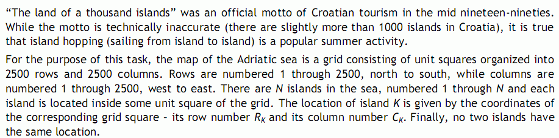
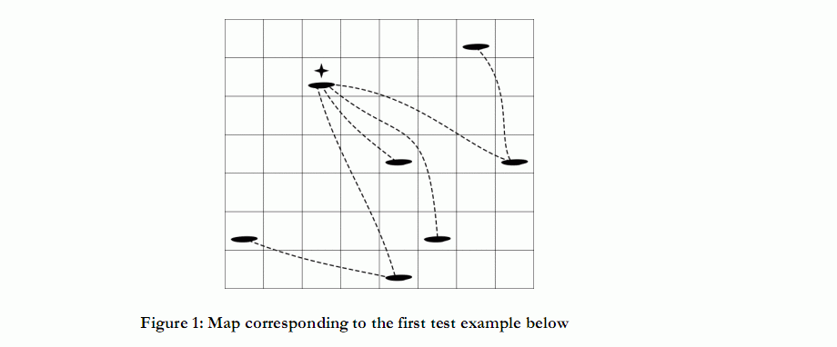
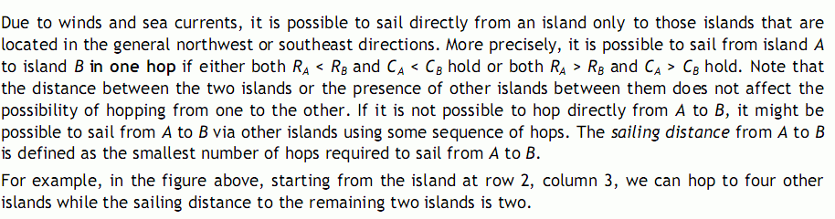
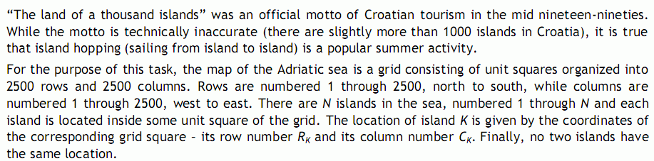
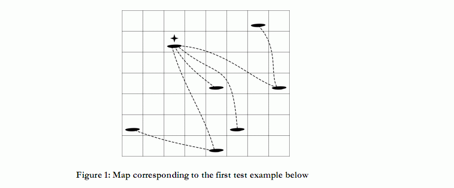
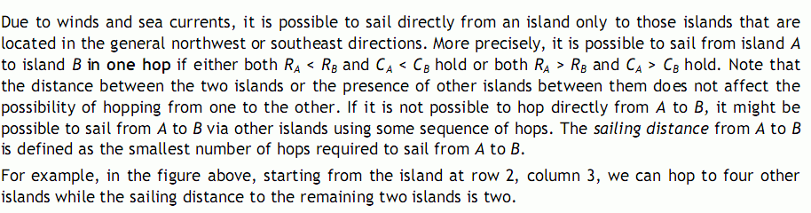

琪琪在大海上搜索涛涛，琪琪把大海分为2500*2500的网格，现在琪琪拥有N条小帆船，她可以在船之间移动，由于风向的原因，她只能从一条船移动到位于这条船严格左上方或严格右下方的船。对于
每条帆船，琪琪想要知道从这条船跳到其他各条船的最小跳转次数和。
| F.A.Qs | Home | Discuss | ProblemSet | Status | Ranklist | Contest | 入门OJ | ModifyUser Xeonacid | Logout | 捐赠本站 |
|---|



琪琪在大海上搜索涛涛，琪琪把大海分为2500*2500的网格，现在琪琪拥有N条小帆船，她可以在船之间移动，由于风向的原因，她只能从一条船移动到位于这条船严格左上方或严格右下方的船。对于
每条帆船，琪琪想要知道从这条船跳到其他各条船的最小跳转次数和。
The first line of input contains an integer N (3 ≤ N ≤ 250 000), the number of islands. The following N lines
contain the locations of the islands. Each location is a pair of integers between 1 and 2500 (inclusive), the row and column numbers, respectively.
第一行包含一个数N，表示帆船的个数。
接下来的N行，每行包含一对数(x,y)，表示帆船的位置
The output should contain N lines. For each island, in the same order they were given in the input, output
the sum of sailing distances from all other islands on a single line.
输出需要包含N行，表示琪琪想要知道的答案。